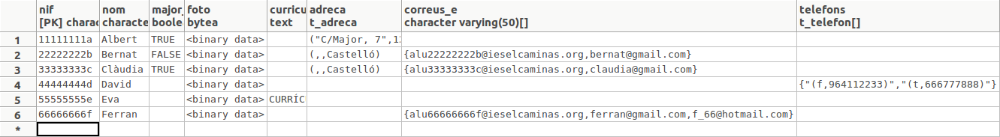

2.3.2.3 Arrays
Arrays
Havíem vist que el millor per a poder introduir els valors d'un array en una sentència SQL era utilitzar el constructor ARRAY, posant entre claudàtors i separats per comes els distints valors. Evidentment, des de Java a través de JDBC també podrem utilitzar aquesta manera. Però anem a veure una forma alternativa utilitzant el PreparedStatement, amb paràmetres, i per a posar el valor de l'array gastarem el mètode setArray(index,array)., on el segon paràmetre és del tipus java.sql.Array, i per tant no és un array habitual de Java, però que podem convertir-lo fàcilment, tal i com es veu en el següent exemple:
Aquest serà ara el contingut de la taula:

Com es pot observar, a partir d'un array de Strings (correus) hem construït l'array de tipus java.sql.Array amb el mètode createArrayOf(tipus,array) de la connexió (per tant de JDBC). Després només cal inicialitzar el paràmetre amb setArray(index,array) del statement. Ho podíem haver fet tot en una línia:
st.setArray(3, con.createArrayOf("varchar", new String[]{"alu66666666f@ieselcaminas.org","ferran@gmail.com","f_66@hotmail.com"}));
Per a fer el procés invers, és a dir, pera poder llegir un array i utilitzar-lo en Java, utilitzarem el mètode getArray(index) del ResultSet, que torna un java.sql.Array. Per a passar aquest a un array normal de Java, utilitzarem el mètode getArray(), que encara que es diu igual que l'anterior, ara és un mètode de java.sql.Array, i no té paràmetres.
import java.sql.DriverManager;
import java.sql.ResultSet;
import java.sql.SQLException;
public class Prova5 {
public static void main(String[] args) throws SQLException {
String url = "jdbc:postgresql://89.36.214.106:5432/rxx";
Connection con = DriverManager.getConnection(url, "rxx", "rxx");
ResultSet rs = con.createStatement().executeQuery("SELECT nom,correus_e FROM persona4 WHERE nom='Ferran'");
while (rs.next()) {
System.out.println("Correus de " + rs.getString(1));
String[] correus = (String[]) rs.getArray(2).getArray();
for (String c : correus) {
System.out.println(c);
}
}
rs.close();
con.close();
}
}
Evidentment, si de la sentència SQL obtenim només un element de l'array, el mètode del ResulSet que hem d'utilitzar és el get del tipus elemental.
import java.sql.DriverManager;
import java.sql.ResultSet;
import java.sql.SQLException;
public class Prova6 {
public static void main(String[] args) throws SQLException {
String url = "jdbc:postgresql://89.36.214.106:5432/rxx";
Connection con = DriverManager.getConnection(url, "rxx", "rxx");
ResultSet rs = con.createStatement().executeQuery("SELECT nom,correus_e[1] FROM persona4 ORDER BY nom");
while (rs.next()) {
System.out.print("Primer correu de " + rs.getString(1) + ": ");
System.out.println(rs.getString(2));
}
rs.close();
con.close();
}
}
Llicenciat sota la Llicència Creative Commons Reconeixement NoComercial CompartirIgual 2.5